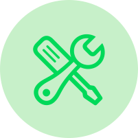

Musique
J’ai commencé la musique à l’âge de 6 ans. J’ai commencé par prendre des cours de batterie puis plus tard j’ai appris à jouer de la guitare et de la basse en autodidacte. Je fais des concerts de temps en temps et depuis le covid, je compose, enregistre et fais le mixage de mes compositions.
Acquis
Patience
Autonomie

Réparation micro-soudure
Étant très curieux j’ai commencé à démonter les téléphones pour le plaisir. Petit à petit j’ai commencé à changer les pièces primaires comme les écrans. Aujourd’hui j’interviens directement sur la carte mère en changeant des composants CMS afin de rendre l’appareil de nouveau fonctionnel.
Acquis
Curiosité
Rigueur
Informatique
J’ai commencé à m’intéresser à l’informatique à l’âge de 10 ans en voulant résoudre des petits problèmes informatiques. Plus tard j’ai découvert la programmation que j’ai apprise en autodidacte avec Openclassrooms. Je fais actuellement mes études dans l’informatique pour approfondir mes connaissances
Acquis
Logique